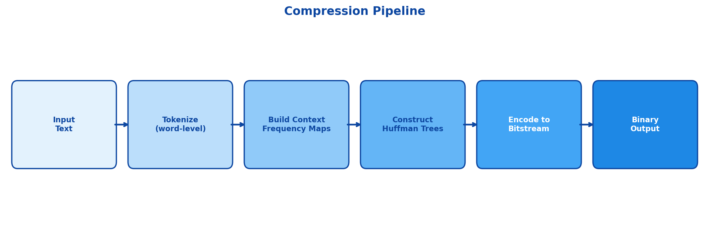

A lossless compressor that replaces one global Huffman codebook with deterministic, context-conditioned trees and a safe escape path for unseen transitions.
Why context matters
Standard Huffman coding assigns a variable-length code using global symbol frequencies. It is optimal among prefix codes for that one memoryless distribution, but text is not memoryless. After “q,” the probability of “u” is much higher than its probability across the document; whitespace, punctuation, source code, and repeated phrases all have similarly strong local structure.
The project asks whether a codebook conditioned on the previous N tokens can move the practical bit rate closer to conditional entropy. Instead of changing Huffman’s tree construction, it changes the distribution supplied to the tree.
Compression pipeline
The canonical implementation supports word-level tokenization that preserves whitespace exactly and character-level tokenization for lower-level analysis. It first builds a global frequency map, then a separate frequency map for every observed context tuple.
- Deterministic trees: ties are broken using symbol values so the decoder can reconstruct exactly the same trees from serialized frequency maps.
- Context selection: the previous N tokens select the active codebook for the next symbol.
- Escape fallback: when a context has not observed every global token, an
<ESC>symbol signals the decoder to read the next symbol from the global tree. - Bit packing: a custom writer packs individual prefix-code bits into bytes instead of storing strings of zeros and ones.
- Self-contained output: a four-byte header length, JSON metadata, and raw bitstream allow independent decompression.

The escape-path problem
A context codebook only knows tokens observed after that context in the training text. If the encoder later sees an unseen transition, the decoder needs an unambiguous way to fall back. The implementation inserts a unique escape token into context trees whose vocabulary is a strict subset of the global vocabulary. It does not insert the token when the context already covers everything, because doing so would lengthen codes for a branch that can never be used.
def needs_escape(context_vocab, global_vocab):
return context_vocab < global_vocab
if token in context_codes:
writer.write_bits(context_codes[token])
else:
writer.write_bits(context_codes[escape_token])
writer.write_bits(global_codes[token])Decoding and correctness
Decompression reads the header, reconstructs the deterministic global and context trees, and then walks one tree per output token. A fixed-length deque maintains the same context state as the encoder. When the decoder reaches an escape leaf, it switches to the global tree for exactly one token before updating the context window.
Because word mode preserves whitespace tokens and the output records the total token count, decompression can reconstruct the original text without inserting or normalizing spaces. That round-trip property is more important than a favourable benchmark: a compressor that cannot reproduce input bytes is not useful.
Measurement
The experiment harness compares original byte size, regular Huffman size, context-aware size, compression ratios, encoding throughput, global Shannon entropy, conditional entropy, and actual bits per token. It also reports high-frequency contexts where the conditional codebook saves the most bits relative to the global codebook.
The repository’s generated charts show that gains depend heavily on the data distribution. Repetitive text and code-like patterns create strong contexts; heterogeneous or small corpora provide less predictable benefit because the metadata and extra trees carry overhead.

Trade-offs
The main cost is state explosion. As order increases, the number of possible contexts and trees can grow rapidly, increasing header size and memory consumption. A higher-order model is therefore not automatically better. Practical deployment would need context pruning, minimum-frequency thresholds, compact binary metadata, and selection of order based on total file size rather than bitstream size alone.
The theoretical improvement from conditional distributions only matters after accounting for the cost of communicating the model. Compression is a systems problem involving algorithms, serialization, determinism, memory, and measurement.
Product surfaces
The CLI supports compressing, decompressing, and running built-in experiments. The Streamlit application exposes the same mechanism interactively with text/file input, configurable tokenization and context order, entropy metrics, and analytical charts. Keeping both surfaces tied to the same canonical logic reduces the risk that a demonstration diverges from the actual file format.
Return to portfolio →